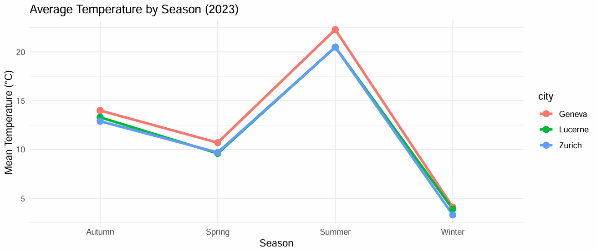
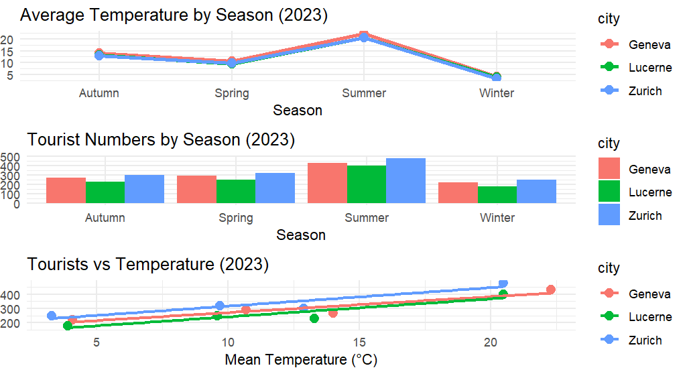

1. Average Temperature by Season

2. Tourist Numbers by Season

3. Relationship Between Temperature and Tourists

Comparing Zurich, Geneva, and Lucerne across seasons


The analysis shows that tourist numbers in Switzerland increase significantly during summer, coinciding with higher average temperatures. Zurich and Geneva attract the highest number of visitors overall, while Lucerne follows a similar but slightly lower trend. This suggests that weather conditions have a clear impact on seasonal tourism.